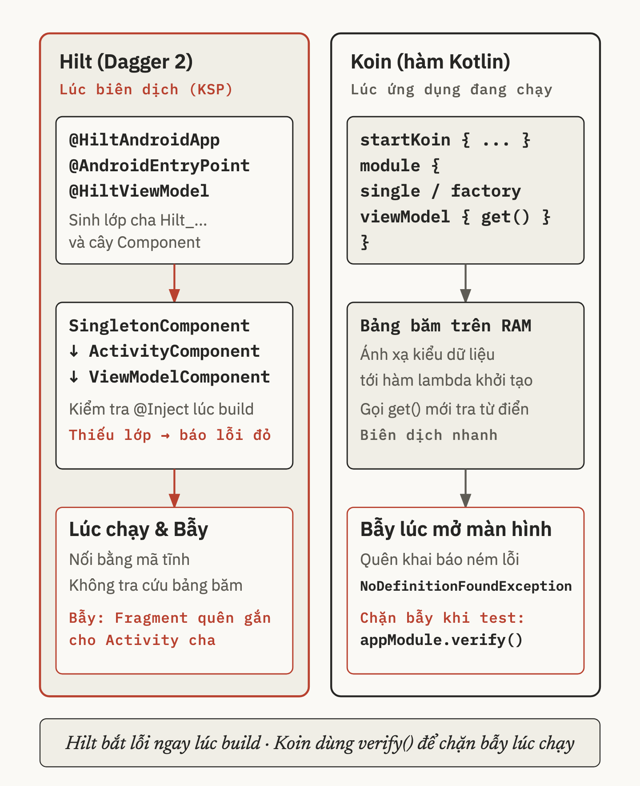

Hilt & Koin
Bản 30 giây
Khi ứng dụng có hàng chục màn hình, việc tự tạo từng kho dữ liệu rồi truyền vào ViewModel làm code phình to. Hilt và Koin đều tự động lắp ráp các đối tượng này nhưng đi theo hai hướng ngược hẳn nhau. Hilt sinh sẵn code nối đối tượng lúc biên dịch, còn Koin tra cứu bảng đăng ký để tạo đối tượng lúc đang chạy.
Cần biết trước
Vấn đề buộc nó ra đời
Khi áp dụng Dependency Injection cho dự án lớn, Dagger 2 sinh code lúc biên dịch. Tuy nhiên, nó bắt bạn phải tự viết rất nhiều giao diện Component và Subcomponent. Đặc biệt trên Android, hệ điều hành tự khởi tạo Activity. Vì vậy, bạn phải viết nhiều code khuôn mẫu để nối vòng đời màn hình vào Dagger 2.
Năm 2017, Arnaud Giuliani ra mắt Koin dùng hàm Kotlin thuần túy (module, single, viewModel). Nó giúp đăng ký đối tượng gọn nhẹ mà không cần bước sinh mã. Đổi lại, tới năm 2020 Google giới thiệu Hilt bọc bên ngoài Dagger 2 với bộ khung vòng đời Android dựng sẵn.
Hai thư viện này đại diện cho hai trường phái trên Android. Bạn chọn kiểm tra chặt chẽ từ lúc build với Hilt, hoặc gọn nhẹ lúc viết code với Koin.
Nó thực sự là cái gì
Hilt không phải là một thư viện độc lập thay thế Dagger 2. Nó là bộ tiền xử lý sinh sẵn các khung chứa (SingletonComponent, ViewModelComponent) cho Dagger 2. Ngược lại, Koin là một bộ định vị dịch vụ (Service Locator) bọc cú pháp tiêm phụ thuộc. Nó giữ bảng băm ánh xạ kiểu dữ liệu tới hàm lambda khởi tạo ngay trên RAM.
Cơ chế

Với Hilt, khi bạn gắn @HiltAndroidApp lên Application và @AndroidEntryPoint lên Activity, trình xử lý KSP sinh ra lớp cha Hilt_... ngay lúc biên dịch. Lớp cha này tự động lấy đối tượng từ khung chứa tương ứng và bơm vào @HiltViewModel trước khi màn hình hiện lên. Với Koin, hàm startKoin lúc mở ứng dụng sẽ nạp các khối module { ... } vào một từ điển trong bộ nhớ. Khi màn hình gọi get() hoặc lấy ViewModel, Koin mới tra từ điển này để gọi hàm single hoặc factory tạo đối tượng tại chỗ.
Đánh đổi
Hilt bắt được lỗi thiếu hoặc vòng lặp phụ thuộc ngay lúc bấm build, và chạy rất nhanh vì không phải tra cứu bảng băm. Đổi lại, bước sinh mã của Hilt làm thời gian biên dịch lâu hơn. Nó cũng khó dùng chung cho dự án đa nền tảng hơn Koin. Koin biên dịch nhanh và viết gọn, nhưng nếu quên khai báo một lớp thì ứng dụng đang chạy mới bị sập.
Nguyên lý gốc
Đánh đổi thời điểm bắt lỗi giữa lúc build và lúc chạy. Bạn chịu tốn thời gian biên dịch để an toàn lúc chạy, hoặc biên dịch tức thì nhưng kiểm tra lúc chạy.
Key insight
Koinkhông phải bản viết gọn củaHilt; nó tra bảng lúc chạy, nên quên khai báo chỉ lộ ra khi mở màn hình.
Khuôn mẫu chuẩn
// Hilt: kiểm tra và sinh mã lúc biên dịch
@HiltViewModel
class OrderViewModel @Inject constructor(private val repo: OrderRepo) : ViewModel()
// Koin: đăng ký lambda vào bảng tra cứu lúc chạy
val appModule = module {
single { OrderRepo() }
viewModel { OrderViewModel(get()) }
}
Bẫy & ranh giới
Trong Koin, nếu quên khai báo tham số của OrderViewModel trong module, ứng dụng sẽ sập với lỗi NoDefinitionFoundException lúc mở màn hình. Để chặn bẫy này, bạn bắt buộc phải gọi hàm verify() của Koin trong bài unit test. Trong Hilt, gắn @AndroidEntryPoint cho Fragment mà quên gắn cho Activity cha cũng làm ứng dụng sập với lỗi IllegalStateException. Ngoài ra, tiêm đối tượng sống ngắn theo ActivityComponent vào một @Singleton sẽ bị Hilt chặn lúc build để chống rò rỉ bộ nhớ.
Câu hỏi thực chiến
Hỏi: Quên khai báo một lớp phụ thuộc thì khi nào Hilt báo lỗi và khi nào Koin báo lỗi?
Hilt báo lỗi đỏ ngay lúc bạn bấm biên dịch dự án và không cho xuất ra file cài đặt. Còn Koin mặc định vẫn cho biên dịch xong. Nó chỉ ném lỗi NoDefinitionFoundException làm sập ứng dụng lúc người dùng mở màn hình cần lớp đó.
Hỏi: Làm sao để dùng Koin mà vẫn phát hiện được lỗi quên khai báo phụ thuộc trước khi giao app cho người dùng?
Bạn viết một bài unit test nhỏ trên JVM gọi hàm appModule.verify() từ thư viện koin-test, hoặc cài thêm Koin Compiler Plugin. Hàm verify() sẽ quét toàn bộ cây hàm dựng trong module để báo lỗi ngay khi chạy test mà không cần mở máy ảo.
Hỏi: Vì sao gắn @AndroidEntryPoint lên Fragment mà quên gắn lên Activity cha lại bị sập ứng dụng?
Vì các khung chứa của Hilt xếp theo cây cha - con. FragmentComponent buộc phải lấy phụ thuộc cấp cao từ ActivityComponent của Activity chứa nó. Nếu Activity không có @AndroidEntryPoint, khung chứa cha không tồn tại nên Fragment không có nơi để nối dây.
Hỏi: Đối tượng đánh dấu @Singleton trong Hilt hoặc khai báo single trong Koin có sống sót khi hệ điều hành diệt tiến trình ngầm không?
Không. Cả @Singleton lẫn single chỉ giữ duy nhất một đối tượng trên bộ nhớ RAM trong suốt thời gian tiến trình ứng dụng đang sống. Khi hệ điều hành tắt tiến trình để thu hồi RAM, các đối tượng này mất sạch và được tạo mới khi mở lại app.
Ý bắt buộc khi giải thích lại
- Phân biệt được cơ chế sinh lớp cha và kiểm tra cây phụ thuộc lúc biên dịch của Hilt với cơ chế tra cứu bảng băm lúc chạy của Koin.
- Giải thích được cấu trúc cây khung chứa của Hilt (@HiltAndroidApp, @AndroidEntryPoint, @HiltViewModel) và cách khai báo module, single, viewModel trong Koin.
- Chỉ ra được lỗi NoDefinitionFoundException lúc chạy của Koin (cách phòng bằng verify()) và lỗi quên gắn @AndroidEntryPoint trên Activity cha của Hilt.
- Viết lại được khuôn mẫu chuẩn từ trí nhớ.
Nguồn
- Dependency injection with Hilt — Android Developers
- Hilt design overview — Dagger
- Android quickstart — Koin
- Verify your Koin configuration — Koin